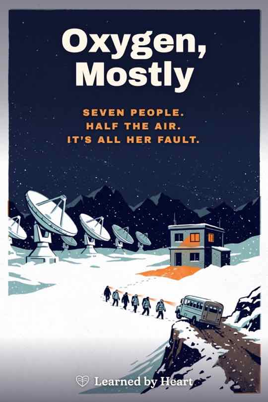
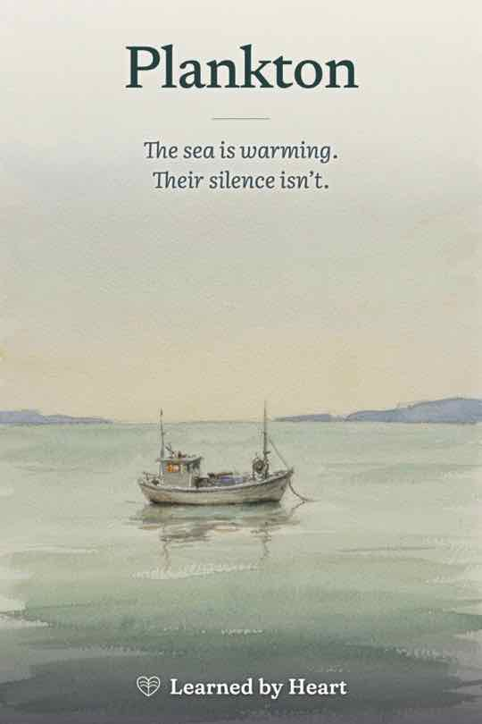
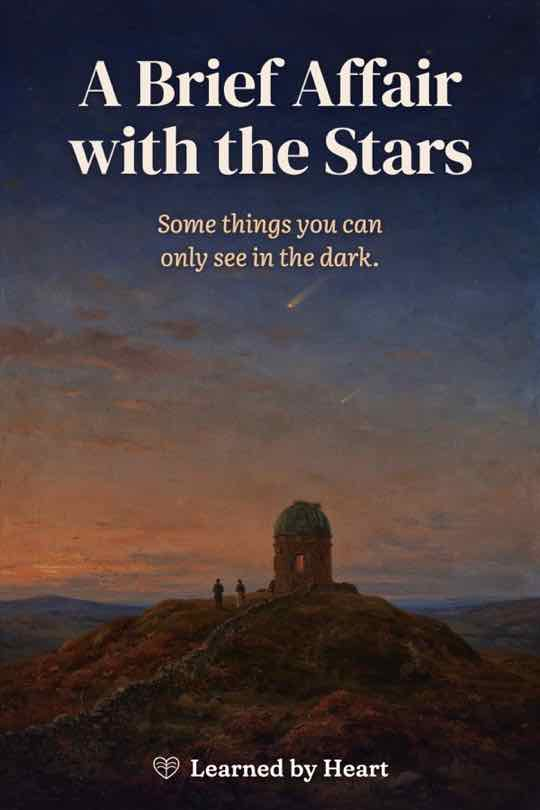
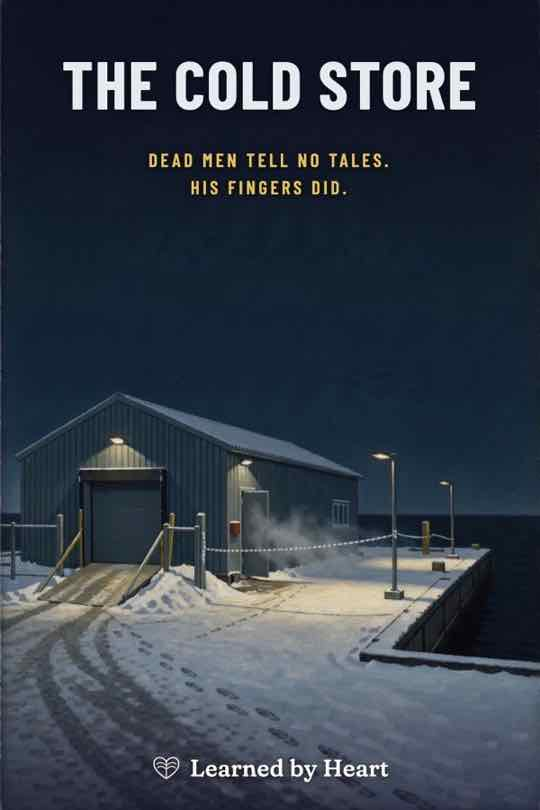
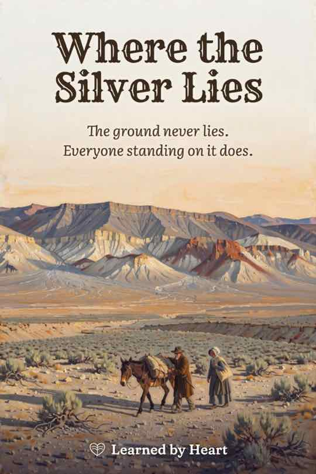
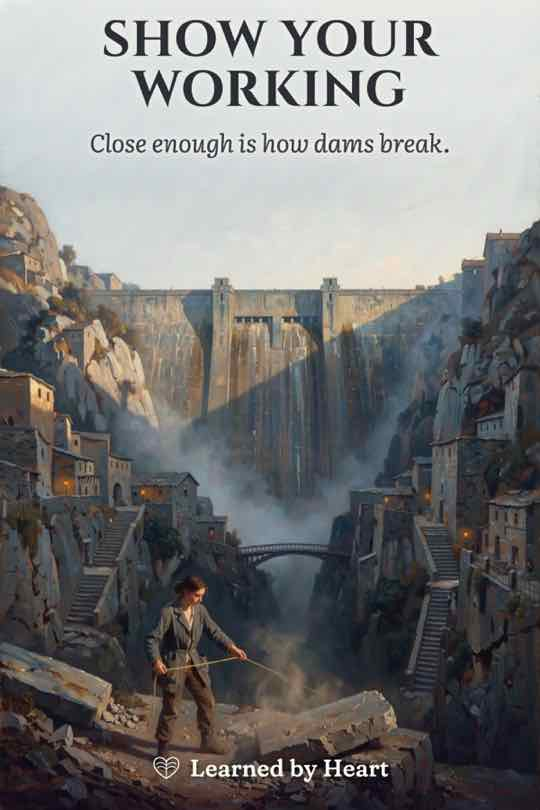

Learned by Heart › Library › Novels that teach science
Novels that teach science
Mysteries, love stories and adventures built around real science: the body, the planet, the cosmos. The facts arrive because a character needs them, never as a lecture. Subjects here: astronomy and space, cell biology, climate science, electricity and energy, everyday chemistry, everyday physics, forensic science, genetics and evolution. Chapter one of every book is free.

Oxygen, MostlyA funny science survival story for readers of Andy Weirteaches how the body worksSeven people. Half the air. It’s all her fault. The Hedge-Cook's DaughterA storybook fantasy for readers of J.K. Rowling and J.R.R. Tolkienteaches everyday chemistryThe river is dying. The answer lies beneath.
The Hedge-Cook's DaughterA storybook fantasy for readers of J.K. Rowling and J.R.R. Tolkienteaches everyday chemistryThe river is dying. The answer lies beneath. Water on the Wrong SideA marshland mystery for readers of Delia Owensteaches wetlands, weather and climateMost secrets go out with the tide. This one came back.
Water on the Wrong SideA marshland mystery for readers of Delia Owensteaches wetlands, weather and climateMost secrets go out with the tide. This one came back.
PlanktonA quiet love story for readers of Sally Rooney and Claire Keeganteaches climate scienceThe sea is warming. Their silence isn’t. Mitochondria, My LoveA lab romantic comedy for readers of Ali Hazelwoodteaches cell biologyShe studies biology. Together, they have chemistry.
Mitochondria, My LoveA lab romantic comedy for readers of Ali Hazelwoodteaches cell biologyShe studies biology. Together, they have chemistry.
A Brief Affair with the StarsA sweeping love story for readers of Jojo Moyesteaches astronomy and spaceSome things you can only see in the dark. What the Island KeptA science thriller for readers of Michael Crichtonteaches genetics and evolutionSurvival of the fittest had help.
What the Island KeptA science thriller for readers of Michael Crichtonteaches genetics and evolutionSurvival of the fittest had help. Reaction MassA space opera for readers of James S.A. Coreyteaches everyday physicsIn space, the hard part is stopping.
Reaction MassA space opera for readers of James S.A. Coreyteaches everyday physicsIn space, the hard part is stopping.
The Cold StoreA Nordic noir for readers of Jo Nesbø and Ann Cleevesteaches forensic scienceDead men tell no tales. His fingers did. Ladies Who RuckA sports comedy for readers of Ted Lasso and Nick Hornbyteaches how muscles grow and what food doesIt’s time to throw their weight around.
Ladies Who RuckA sports comedy for readers of Ted Lasso and Nick Hornbyteaches how muscles grow and what food doesIt’s time to throw their weight around. NotifiableA hospital drama for readers of Adam Kay and Grey's Anatomyteaches the immune systemShe caught it. Now she has to say so.
NotifiableA hospital drama for readers of Adam Kay and Grey's Anatomyteaches the immune systemShe caught it. Now she has to say so. IslandingA literary novel after the blackout for readers of Emily St. John Mandelteaches electricity and energyNo town is an island. This one has to be.
IslandingA literary novel after the blackout for readers of Emily St. John Mandelteaches electricity and energyNo town is an island. This one has to be. Noon at GreenwichAn age-of-sail adventure for readers of Patrick O'Brianteaches navigation and how the oceans moveLost at sea, and running out of time.
Noon at GreenwichAn age-of-sail adventure for readers of Patrick O'Brianteaches navigation and how the oceans moveLost at sea, and running out of time.
Where the Silver LiesA Western for readers of Larry McMurtry and Charles Portisteaches geologyThe ground never lies. Everyone standing on it does.
Show Your WorkingAn epic fantasy for readers of Brandon Sandersonteaches maths: ratio, algebra, geometry and proofClose enough is how dams break.
Want one written just for you?
Tell us what you love reading and what you've always meant to understand, and we'll write a novel for you, or for someone you love. Chapter one arrives within 24 hours.
Start your story